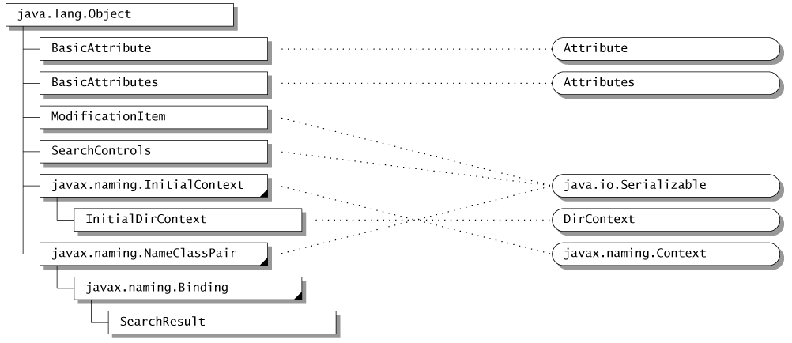

<HTML>
<HEAD>
  <TITLE>5 Overview of the Interface</TITLE>
</HEAD>
<BODY BGCOLOR="#ffffff">

<P><TABLE summary="layout" WIDTH="100%" BORDER="0" CELLSPACING="2" CELLPADDING="0">
  <TR>
    <TD>
    <A HREF="jndiTOC.html">CONTENTS</A> | <A HREF="jndi.4.html">PREV</A>
    | <A HREF="jndi.6.html">NEXT</A></TD> 
    <TD ALIGN="RIGHT">
    <I><FONT COLOR="#707070">JNDI API</FONT></I></TD> 
  </TR>
</TABLE><HR ALIGN=LEFT SIZE="8" WIDTH="35%" NOSHADE></P>

<H2 CLASS="chapter"><A NAME="pgfId=998631"></A>5. Overview of
the Interface</H2>

<BLOCKQUOTE>
  <P CLASS="body"><A NAME="pgfId=997932"></A>The JNDI API is contained
  in four packages:</P>
</BLOCKQUOTE>

<UL>
  <UL>
    <LI CLASS="bullet"><A NAME="pgfId=998721"></A><CODE>javax.naming</CODE>
    contains classes and interfaces for accessing naming services
    <LI CLASS="bullet"><A NAME="pgfId=998728"></A><CODE>javax.naming.directory</CODE>
    extends the core <CODE>javax.naming</CODE> package to provide
    access to directories
    <LI CLASS="bullet"><A NAME="pgfId=998744"></A><CODE>javax.naming.event</CODE>
    contains classes and interfaces for supporting event notification
    in naming and directory services
    <LI CLASS="bullet"><A NAME="pgfId=998745"></A><CODE>javax.naming.ldap</CODE>
    contains classes and interfaces for supporting LDAP v3 extensions
    and controls
  </UL>
</UL>

<BLOCKQUOTE>
  <P CLASS="body"><A NAME="pgfId=998729"></A>The JNDI service provider
  interface is contained one package:</P>
</BLOCKQUOTE>

<UL>
  <UL>
    <LI CLASS="bullet"><A NAME="pgfId=998765"></A><CODE>javax.naming.spi</CODE>
    contains classes and interfaces that allow various naming and
    directory service providers to be dynamically plugged in beneath
    the JNDI API (see the JNDI SPI document for details)
  </UL>
</UL>

<BLOCKQUOTE>
  <P CLASS="body"><A NAME="pgfId=997933"></A>The following sections
  provide an overview of the JNDI API. For more details on the
  API, see the corresponding javadoc.</P>
</BLOCKQUOTE>

<DIV>

<H3 CLASS="section"><A NAME="pgfId=997937"></A>5.1 The Naming
Package -- <CODE>javax.naming</CODE> <A HREF="#pgfId=997936" 
CLASS="footnote">1</A></H3>

<BLOCKQUOTE>
  <H3 CLASS="section"><A HREF="#pgfId=997936" CLASS="footnote">API documentation.</a>" WIDTH="591" HEIGHT="405" ALIGN="BOTTOM"
  BORDER="0" NATURALSIZEFLAG="3"></A></H3>
  <P CLASS="section"><CENTER><FONT SIZE="-1">(exception classes
  are not shown)</FONT></CENTER></P>
</BLOCKQUOTE>

<H4 CLASS="subsection"><A NAME="pgfId=997944"></A>5.1.1 Contexts</H4>

<BLOCKQUOTE>
  <P CLASS="body"><A NAME="pgfId=997945"></A><CODE>Context</CODE>
  is the core interface that specifies a naming context. It defines
  basic operations such as adding a name-to-object binding, looking
  up the object bound to a specified name, listing the bindings,
  removing a name-to-object binding, creating and destroying subcontexts
  of the same type, <EM>etc.</EM></P>
  <BLOCKQUOTE>
    <PRE>
public interface Context {
    public Object lookup(Name name) throws NamingException;
    public void bind(Name name, Object obj) throws NamingException;
    public void rebind(Name name, Object obj) throws NamingException;
    public void unbind(Name name) throws NamingException;
    public void rename(Name old, Name new) throws NamingException;
    public NamingEnumeration listBindings(Name name) throws NamingException;
    ...
    public Context createSubcontext(Name name) throws NamingException;
    public void destroySubcontext(Name name) throws NamingException;
    ...
};</PRE>
  </BLOCKQUOTE>
  <P CLASS="body"><A NAME="pgfId=997959"></A>Every naming method
  in <CODE>Context</CODE> takes a name as an argument. The operation
  defined by the method is performed on the <CODE>Context</CODE>
  object that is obtained by implicitly resolving the name. If
  the name is empty (&quot;&quot;) the operation is performed directly
  on the context itself. The name of an object can be a composite
  name reflecting the arrangement of the namespaces used to refer
  to the object. Of course, the client is not exposed to any naming
  service implementation. In fact, a new type of naming service
  can be introduced without requiring the application to be modified
  or even disrupted if it is running.</P>
  <P CLASS="body">&nbsp;</P>
</BLOCKQUOTE>

<H4 CLASS="subsection"><A NAME="pgfId=999065"></A>5.1.2 The Initial
Context</H4>

<BLOCKQUOTE>
  <P CLASS="body"><A NAME="pgfId=997960"></A>In JNDI, every name
  is relative to a context. There is no notion of &quot;absolute
  names.&quot; An application can bootstrap by obtaining its first
  context of class <CODE>InitialContext</CODE> :</P>
  <BLOCKQUOTE>
    <PRE>
public class InitialContext implements Context {
    public InitialContext()...;
    ...
}</PRE>
  </BLOCKQUOTE>
  <P CLASS="body"><A NAME="pgfId=997965"></A>The initial context
  contains a variety of bindings that hook up the client to useful
  and shared contexts from one or more naming systems, such as
  the namespace of URLs or the root of DNS.</P>
  <BLOCKQUOTE>
    <P CLASS="body">&nbsp;</P>
  </BLOCKQUOTE>
</BLOCKQUOTE>

<H4 CLASS="subsection"><A NAME="pgfId=999071"></A>5.1.3 Names</H4>

<BLOCKQUOTE>
  <P CLASS="body"><A NAME="pgfId=997966"></A>The <CODE>Name</CODE>
  interface represents a generic name--an ordered sequence of components.
  Each <CODE>Context</CODE> method that takes a <CODE>Name</CODE>
  argument has a counterpart that takes the name as a <CODE>String</CODE>
  instead. The versions using <CODE>Name</CODE> are useful for
  applications that need to manipulate names: composing them, comparing
  components, and so on. The versions using <CODE>String</CODE>
  are likely to be more useful for simple applications, such as
  those that simply read in a name and look up the corresponding
  object. The <CODE>String</CODE> name parameter represents a composite
  name. The <CODE>Name</CODE> parameter can represent a <EM>composite
  name</EM> or a <EM>compound name</EM> .</P>
  <P CLASS="body"><A NAME="pgfId=1002230"></A>The <CODE>CompositeName</CODE>
  class represents a sequence of names (atomic or compound) from
  multiple namespaces. If the <CODE>Name</CODE> parameter supplied
  to a method of the <CODE>Context</CODE> class is an instance
  of <CODE>CompositeName</CODE> , the name represents a composite
  name.</P>
  <P CLASS="body"><A NAME="pgfId=1002231"></A>If the <CODE>Name</CODE>
  parameter supplied to a method of the <CODE>Context</CODE> class
  is <EM>not</EM> an instance of <CODE>CompositeName</CODE> , the
  name represents a compound name, which can be represented by
  the <CODE>CompoundName</CODE> class or some other implementation
  class. The <CODE>CompoundName</CODE> class represents hierarchical
  names from a single namespace. A context's name parser can be
  used to manipulate compound names in the syntax associated with
  that particular context:</P>
  <BLOCKQUOTE>
    <PRE>
<CODE>public interface Context {</CODE>
<CODE>    ...</CODE>
<CODE>    public NameParser getNameParser(Name name) throws NamingException;</CODE>
<CODE>    ...</CODE>
<CODE>}</CODE></PRE>
  </BLOCKQUOTE>
  <P CLASS="body"><A NAME="pgfId=997974"></A>A namespace browser
  is an example of the kind of application that might need to manipulate
  names syntactically at this level. Most other applications will
  work with strings or composite names.</P>
  <P>&nbsp;</P>
</BLOCKQUOTE>

<H4 CLASS="subsection"><A NAME="pgfId=997976"></A>5.1.4 Bindings</H4>

<BLOCKQUOTE>
  <P CLASS="body"><A NAME="pgfId=997977"></A><CODE>Context.lookup()</CODE>
  is the most commonly used operation. The context implementation
  can return an object of whatever class is required by the Java
  application. For example, a client might use the name of a printer
  to look up the corresponding <CODE>Printer</CODE> object, and
  then print to it directly:</P>
  <BLOCKQUOTE>
    <PRE>Printer printer = (Printer) ctx.lookup(&quot;treekiller&quot;);
printer.print(report);</PRE>
  </BLOCKQUOTE>
  <P CLASS="body"><A NAME="pgfId=997980"></A><CODE>Context.listBindings()</CODE>
  returns an enumeration of name-to-object bindings, each binding
  represented by an object of class <CODE>Binding</CODE> . A binding
  is a tuple containing the name of the bound object, the name
  of the object's class, and the object itself.</P>
  <P CLASS="body"><A NAME="pgfId=997981"></A>The <CODE>Context.list()</CODE>
  method is similar to <CODE>listBindings()</CODE> , except that
  it returns an enumeration of <CODE>NameClassPair</CODE> objects.
  Each <CODE>NameClassPair</CODE> contains an object's name and
  the name of the object's class. The <CODE>list()</CODE> method
  is useful for applications such as browsers that wish to discover
  information about the objects bound within a context, but don't
  need all of the actual objects. Although <CODE>listBindings()</CODE>
  provides all of the same information, it is potentially a much
  more expensive operation.</P>
  <BLOCKQUOTE>
    <PRE>
public class NameClassPair ... {
    public String getName() ...;
    public String getClassName() ...;
    ...
}
public class Binding extends NameClassPair {
    public Object getObject() ...;
    ...
}</PRE>
  </BLOCKQUOTE>
</BLOCKQUOTE>

<H4 CLASS="subsection"><A NAME="pgfId=997994"></A>5.1.5 References</H4>

<BLOCKQUOTE>
  <P CLASS="body"><A NAME="pgfId=997995"></A>Different <CODE>Context</CODE>
  implementations are able to bind different kinds of objects natively.
  A particularly useful object that should be supported by any
  general-purpose context implementation is the <CODE>Reference</CODE>
  class. A reference represents an object that exists outside of
  the directory. References are used to give JNDI clients the illusion
  that objects of arbitrary classes are able to be bound in naming
  or directory services--such as X.500--that do not have native
  support for objects in the Java programming language.</P>
  <P CLASS="body"><A NAME="pgfId=1002259"></A>When the result of
  an operation such as <CODE>Context.lookup()</CODE> or <CODE>Binding.getObject()</CODE>
  is a <CODE>Reference</CODE> object, JNDI attempts to convert
  the reference into the object that it represents before returning
  it to the client. A particularly significant instance of this
  occurs when a reference representing a <CODE>Context</CODE> of
  one naming system is bound to a name in a different naming system.
  This is how multiple independent naming systems are joined together
  into the JNDI composite namespace. Details of how this mechanism
  operates are provided in the JNDI SPI document.</P>
  <P CLASS="body"><A NAME="pgfId=1002260"></A>Objects that are
  able to be represented by a reference should implement the <CODE>Referenceable</CODE>
  interface. Its single method -- <CODE>getReference()</CODE> --
  returns the object's reference. When such an object is bound
  to a name in any context, the context implementation might store
  the reference in the underlying system if the object itself cannot
  be stored natively.</P>
  <P CLASS="body"><A NAME="pgfId=997998"></A>Each reference may
  contain the name of the class of the object that it represents,
  and may also contain the location (typically a URL) where the
  class file for that object can be found. In addition, a reference
  contains a sequence of objects of class <CODE>RefAddr</CODE>
  . Each <CODE>RefAddr</CODE> in turn contains a &quot;type&quot;
  string and some addressing data, generally a string or a byte
  array.</P>
  <P CLASS="body"><A NAME="pgfId=997999"></A>A specialization of
  <CODE>Reference</CODE> called a <CODE>LinkRef</CODE> is used
  to add &quot;symbolic&quot; links into the JNDI namespace. It
  contains the name of a JNDI object. By default, these links are
  followed whenever JNDI names are resolved.</P>
  <P>&nbsp;</P>
</BLOCKQUOTE>

<H4 CLASS="subsection"><A NAME="pgfId=998933"></A>5.1.6 Referrals</H4>

<BLOCKQUOTE>
  <P CLASS="body"><A NAME="pgfId=998934"></A>Some naming/directory
  services support the notion of <EM>referrals</EM> for redirecting
  a client's request to another server. The JNDI client can request
  that referrals be automatically followed, be ignored, or be processed
  manually.</P>
  <P CLASS="body"><A NAME="pgfId=998935"></A>The abstract class
  <CODE>ReferralException</CODE> is used to represent a referral:</P>
  <BLOCKQUOTE>
    <PRE>public abstract class ReferralException extends NamingException {
    public abstract Context getReferralContext() throws NamingException;
    ...
    public abstract Object getReferralInfo();
    public abstract void retryReferral();
    public abstract boolean skipReferral();
}</PRE>
  </BLOCKQUOTE>
  <P CLASS="body"><A NAME="pgfId=998946"></A>When a referral is
  encountered and the client has requested that referrals not be
  ignored or automatically followed, a <CODE>ReferralException</CODE>
  is thrown. The <CODE>getReferralInfo()</CODE> method provides
  information--in a format appropriate to the service provider--about
  where the referral leads. The application is not required to
  examine this information; however, it might choose to present
  it to a human user to help him determine whether to follow the
  referral or not. <CODE>skipReferral()</CODE> allows the application
  to discard a referral and continue to the next referral (if any).</P>
  <P CLASS="body"><A NAME="pgfId=998947"></A>To continue the operation,
  the application re-invokes the method on the referral context
  using the same arguments it supplied to the original method.</P>
  <P>&nbsp;</P>
</BLOCKQUOTE>

<H3 CLASS="section"><A NAME="pgfId=998973"></A>5.2 The Directory
Package -- <CODE>javax.naming.directory</CODE> <A HREF="#pgfId=999039"
CLASS="footnote">2</A></H3>

<BLOCKQUOTE>
  <P>&nbsp;</P>
  <P>API documentation</a>." WIDTH="1002" HEIGHT="434"
  ALIGN="BOTTOM" BORDER="0" NATURALSIZEFLAG="3"></P>
  <P><CENTER><FONT SIZE="-1">(exception classes are not shown)</FONT></CENTER></P>
</BLOCKQUOTE>

<H4 CLASS="subsection"><A NAME="pgfId=998010"></A>5.2.1 Directory
Objects</H4>

<BLOCKQUOTE>
  <P CLASS="body"><A NAME="pgfId=998011"></A>The <CODE>DirContext</CODE>
  interface enables the directory capability by defining methods
  for examining and updating attributes associated with a directory
  object.</P>
  <BLOCKQUOTE>
    <PRE>
public interface DirContext extends Context {
    public Attributes getAttributes(Name name)
		 throws NamingException;
    public Attributes getAttributes(Name name, String[] attrIds)
		 throws NamingException;
    ...
    public void modifyAttributes(Name name, int modOp, Attributes attrs)
		 throws NamingException;
    public void modifyAttributes(Name name, ModificationItem[] mods)
		 throws NamingException;
    ...
}</PRE>
  </BLOCKQUOTE>
  <P CLASS="body"><A NAME="pgfId=998039"></A>The <CODE>getAttributes()</CODE>
  operations on a directory return some or all of its attributes.
  Attributes are modified using two forms of <CODE>modifyAttributes()</CODE>
  . Both forms make use of a &quot;modification operation,&quot;
  one of:</P>
  <BLOCKQUOTE>
    <PRE>ADD_ATTRIBUTE
REPLACE_ATTRIBUTE
REMOVE_ATTRIBUTE</PRE>
  </BLOCKQUOTE>
  <P CLASS="body"><A NAME="pgfId=998043"></A>The <CODE>ADD_ATTRIBUTE</CODE>
  operation adds values to an attribute if that attribute already
  exists, while the <CODE>REPLACE_ATTRIBUTE</CODE> operation discards
  any pre-existing values. The first form of <CODE>modifyAttributes()</CODE>
  performs the specified operation on each element of a set of
  attributes. The second form takes an array of objects of class
  <CODE>ModificationItem</CODE> :</P>
  <BLOCKQUOTE>
    <PRE>
public class ModificationItem {
    public ModificationItem(int modOp, Attribute attr) ...;
    ...
}</PRE>
  </BLOCKQUOTE>
  <P CLASS="body"><A NAME="pgfId=998048"></A>Each operation is
  performed on its corresponding attribute in the order specified.
  When possible, a context implementation should perform each call
  to <CODE>modifyAttributes()</CODE> as an atomic operation.</P>
  </DIV><DIV>
</BLOCKQUOTE>

<H4 CLASS="subsection"><A NAME="pgfId=999083"></A>5.2.2 Attributes</H4>

<BLOCKQUOTE>
  <P CLASS="body"><A NAME="pgfId=999116"></A>A directory object
  contains a set of zero or more <CODE>Attribute</CODE> objects.
  Each attribute is denoted by a string identifier and can have
  zero or more values of any type.</P>
  <BLOCKQUOTE>
    <PRE>
public interface Attribute ... {
    ...
    public String getID();
    public Object get(int n) throws NamingException;
    public boolean isOrdered();
    public NamingEnumeration getAll()
           throws NamingException;
    ...
}</PRE>
  </BLOCKQUOTE>
  <P CLASS="body"><A NAME="pgfId=999095"></A>An attribute's values
  can be ordered or unordered. If the values are unordered, no
  duplicates are allowed. If the values are ordered, duplicates
  are allowed.</P>
  <P CLASS="body"><A NAME="pgfId=999126"></A>Attributes are grouped
  into a collection by using the <CODE>Attributes</CODE> interface.</P>
  <BLOCKQUOTE>
    <PRE>
public interface Attributes ... {
    ...
    public Attribute get(String attrID);
    public NamingEnumeration getIDs();
    public NamingEnumeration getAll();
    public Attribute put(Attribute attr);
    public Attribute remove(String attrID);
    ...
}</PRE>
  </BLOCKQUOTE>
  <P CLASS="body"><A NAME="pgfId=999151"></A>JNDI provides implementations
  for these two interfaces, <CODE>BasicAttribute</CODE> and <CODE>BasicAttributes</CODE>
  , for convenience. Service providers and applications are free
  to use their own implementations.</P>
  <P CLASS="body"><A NAME="pgfId=999158"></A>Note that updates
  to <CODE>Attributes</CODE> and <CODE>Attribute</CODE> , such
  as adding or removing an attribute or its value, do not affect
  the corresponding representation in the directory. Updates to
  the directory can only be effected by using <CODE>DirContext.modifyAttributes()</CODE>
  .</P>
  <P CLASS="body">&nbsp;</P>
</BLOCKQUOTE>

<H4 CLASS="subsection"><A NAME="pgfId=998049"></A>5.2.3 Directory
Objects as Naming Contexts</H4>

<BLOCKQUOTE>
  <P CLASS="body"><A NAME="pgfId=998050"></A>The <CODE>DirContext</CODE>
  interface also behaves as a naming context by extending the <CODE>Context</CODE>
  interface. This means that any directory object can also provide
  a naming context. In addition to a directory object keeping a
  variety of information about a person, for example, it is also
  a natural naming context for resources associated with that person:
  a person's printers, file system, calendar, <EM>etc.</EM></P>
  <P CLASS="body"><A NAME="pgfId=999053"></A>Hybrid operations
  perform certain naming and directory operations in a single atomic
  operation:</P>
  <PRE>
public interface DirContext extends Context {
    ...
    public void bind(Name name, Object obj, Attributes attrs)
           throws NamingException;
    ...
}</PRE>
  <P CLASS="body"><A NAME="pgfId=998063"></A>Other hybrid operations
  that are provided are <CODE>rebind()</CODE> and <CODE>createSubcontext()</CODE>
  that accept an additional <CODE>Attributes</CODE> argument.</P>
  </DIV><DIV>
</BLOCKQUOTE>

<H4 CLASS="subsection"><A NAME="pgfId=998065"></A>5.2.4 The Initial
Context</H4>

<BLOCKQUOTE>
  <P CLASS="body"><A NAME="pgfId=999057"></A>An application that
  is performing directory operations can use <CODE>InitialDirContext</CODE>
  instead of <CODE>javax.naming.InitialContext</CODE> to create
  its initial context:</P>
  <PRE> 
public class InitialDirContext 
       extends InitialContext implements DirContext {
    public InitialDirContext() ...;
    ...
}</PRE>
  <P CLASS="body"><A NAME="pgfId=999055"></A>It can then invoke
  any method in the <CODE>Context</CODE> or <CODE>DirContext</CODE>
  interface on the initial context.</P>
  </DIV><DIV>
</BLOCKQUOTE>

<H4 CLASS="subsection"><A NAME="pgfId=999054"></A>5.2.5 Searches</H4>

<BLOCKQUOTE>
  <P CLASS="body"><A NAME="pgfId=998066"></A>The <CODE>DirContext</CODE>
  interface supports content-based searching of directories. In
  the simplest and most common form of usage, the application specifies
  a set of attributes -- possibly with specific values -- to match.
  It then invokes the <CODE>DirContext.search()</CODE> method on
  the directory object, which returns the matching directory objects
  along with the requested attributes.</P>
  <BLOCKQUOTE>
    <PRE>
public interface DirContext extends Context {
    ...
    public NamingEnumeration search(Name name, Attributes matchingAttributes)
		 throws NamingException;
    public NamingEnumeration search(Name name,
                                    Attributes matchingAttributes,
                                    String[] attributesToReturn)
		 throws NamingException;
    ...
}</PRE>
  </BLOCKQUOTE>
  <P CLASS="body"><A NAME="pgfId=998079"></A>The results of the
  search are returned as a <CODE>NamingEnumeration</CODE> containing
  an enumeration of objects of class <CODE>SearchResult</CODE>
  :</P>
  <BLOCKQUOTE>
    <PRE>
public class SearchResult extends Binding {
    ...
    public Attributes getAttributes() ...;
}</PRE>
  </BLOCKQUOTE>
  <P CLASS="body"><A NAME="pgfId=998085"></A>In the more sophisticated
  case, it is possible to specify a search filter and to provide
  controlling information such as the scope of the search and the
  maximum size of the results. The search filter specifies a syntax
  that follows Internet RFC 2254 for LDAP. The <CODE>SearchControls</CODE>
  argument specifies such things as the scope of the search: this
  can include a single directory object, all of its children, or
  all of its descendants in the directory hierarchy.</P>
  <BLOCKQUOTE>
    <PRE>
public interface DirContext extends Context {
    ...
    public NamingEnumeration search(Name name, 
                                    String filter,
                                    SearchControls ctls)
           throws NamingException;
 
    public NamingEnumeration search(Name name,
                                    String filter,
                                    Object[] filterArgs,
                                    SearchControls ctls)
 		throws NamingException;</CODE>
   	...
}</PRE>
  </BLOCKQUOTE>
</BLOCKQUOTE>

<H4 CLASS="subsection"><A NAME="pgfId=998100"></A>5.2.6 Schema</H4>

<BLOCKQUOTE>
  <P CLASS="body"><A NAME="pgfId=998101"></A>A schema describes
  the rules that define the structure of a namespace and the attributes
  stored within it. The granularity of the schema can range from
  a single schema that is associated with the entire namespace,
  to a per-attribute, fine-grained schema description.</P>
  <P CLASS="body"><A NAME="pgfId=998102"></A>Because schemas can
  be expressed as an information tree, it is natural to use for
  this purpose the naming and directory interfaces already defined
  in JNDI. This is powerful because the schema part of a namespace
  is accessible to applications in a uniform way. A browser, for
  example, can access information in the schema tree just as though
  it were accessing any other directory objects.</P>
  <P CLASS="body"><A NAME="pgfId=998103"></A>Applications can retrieve
  the schema associated with a directory object when the underlying
  context implementation provides the appropriate support.</P>
  <P CLASS="body"><A NAME="pgfId=999370"></A><CODE>DirContext.getSchema()</CODE>
  is used to retrieve the root of the schema tree associated with
  a directory object. The root has children such as &quot;ClassDefinition&quot;,
  &quot;AttributeDefinition&quot;, and &quot;SyntaxDefinition&quot;,
  each denoting the kind of definition being described. The schema
  root and its descendents are objects of type <CODE>DirContext</CODE>
  . The <CODE>DirContext.getSchemaClassDefinition()</CODE> method
  returns a <CODE>DirContext</CODE> that contains class descriptions
  about a particular directory object.</P>
  <BLOCKQUOTE>
    <PRE>
public interface DirContext extends Context {
	...
	public DirContext getSchema(Name name)
		throws NamingException;

	public DirContext getSchemaClassDefinition(Name name)
		throws NamingException;
	...
}</PRE>
  </BLOCKQUOTE>
  <P CLASS="body"><A NAME="pgfId=998904"></A>In addition, the schema
  associated with any attribute can be accessed using the <CODE>Attribute.getAttributeDefinition()</CODE>
  and <CODE>getAttributeSyntaxDefinition()</CODE> methods.</P>
  <BLOCKQUOTE>
    <PRE> 
public interface Attribute ... {
    ...
    public DirContext getAttributeDefinition() throws NamingException;
    public DirContext getAttributeSyntaxDefinition() 
    throws NamingException;
    ...
}</PRE>
  </BLOCKQUOTE>
  <P CLASS="body"><A NAME="pgfId=998128"></A><A HREF="#41679" 
  CLASS="XRef">Example mapping Directory to Schema</A> is an
  example showing the different associations for accessing schema
  information.</P>
  <DIV>
  <H4 CLASS="FigureTitle"><A NAME="pgfId=998248"></A><A NAME="41679"></A>Example
  mapping Directory to Schema</H4>
  <P><MAP NAME="jndi-5" alt="Example mapping Directory to Schema">
</MAP></P>
  <P>&nbsp;</P>
</BLOCKQUOTE>

<H3 CLASS="section"><A NAME="pgfId=999204"></A>5.3 The Event Package
-- <CODE>javax.naming.event</CODE> <A HREF="#pgfId=999203" CLASS="footnote">3</A></H3>

<BLOCKQUOTE>
  <P>API documentation</a>." WIDTH="769" HEIGHT="258" ALIGN="BOTTOM" BORDER="0" NATURALSIZEFLAG="3"></P>
  <P CLASS="body"><A NAME="pgfId=999189"></A>The <CODE>javax.naming.event</CODE>
  package contains classes and interfaces for supporting event
  notification in naming and directory services.</P>
  <P CLASS="body">&nbsp;</P>
</BLOCKQUOTE>

<H4 CLASS="subsection"><A NAME="pgfId=999297"></A>5.3.1 Naming
Events</H4>

<BLOCKQUOTE>
  <P CLASS="body"><A NAME="pgfId=999265"></A>A <CODE>NamingEvent</CODE>
  represents an event that is generated by a naming/directory service.</P>
  <BLOCKQUOTE>
    <PRE>public class NamingEvent extends java.util.EventObject {
    ...
    public int getType();
    public Binding getOldBinding();
    public Binding getNewBinding();
    ...
}</PRE>
  </BLOCKQUOTE>
  <P CLASS="body"><A NAME="pgfId=999327"></A>The event's type identifies
  the type of event. The <CODE>NamingEvent</CODE> class defines
  four types of events:</P>
  <OL>
    <LI><CODE>OBJECT_ADDED</CODE>
    <LI><CODE>OBJECT_REMOVED</CODE>
    <LI><CODE>OBJECT_RENAMED</CODE>
    <LI><CODE>OBJECT_CHANGED</CODE>
  </OL>
  <P CLASS="body"><A NAME="pgfId=999333"></A>These types can be
  placed into two categories:</P>
</BLOCKQUOTE>

<UL>
  <UL>
    <LI CLASS="bullet"><A NAME="pgfId=999301"></A>Those that affect
    the namespace (add/remove/rename an object)
    <LI CLASS="bullet"><A NAME="pgfId=999311"></A>Those that affect
    an object's contents
  </UL>
</UL>

<BLOCKQUOTE>
  <P CLASS="body"><A NAME="pgfId=999312"></A>In addition to the
  event's type, a <CODE>NamingEvent</CODE> contains other information
  about the change, such as information about the object before
  and after the change.</P>
  <P>&nbsp;</P>
</BLOCKQUOTE>

<H4 CLASS="subsection"><A NAME="pgfId=999266"></A>5.3.2 Naming
Listeners</H4>

<BLOCKQUOTE>
  <P CLASS="body"><A NAME="pgfId=999272"></A>A <EM>naming listener</EM>
  is an object that registers for <CODE>NamingEvent</CODE> s. It
  is represented by the interface <CODE>NamingListener</CODE> .
  Each category of <CODE>NamingEvent</CODE> is handled by a corresponding
  subtype of <CODE>NamingListener</CODE> . The <CODE>NamespaceChangeListener</CODE>
  interface represents a listener interested in namespace changes,
  while the <CODE>ObjectChangeListener</CODE> represents a listener
  interested in changes to an object's contents. A listener implementation
  might implement one or both of these interfaces, depending on
  the types of events it is interested in.</P>
  <P>&nbsp;</P>
</BLOCKQUOTE>

<H4 CLASS="subsection"><A NAME="pgfId=999273"></A>5.3.3 Event
Registration and Deregistration</H4>

<BLOCKQUOTE>
  <P CLASS="body"><A NAME="pgfId=999425"></A>The <CODE>EventContext</CODE>
  and <CODE>EventDirContext</CODE> interfaces extend the <CODE>Context</CODE>
  and <CODE>DirContext</CODE> interfaces, respectively, to support
  event registration and deregistration.</P>
  <BLOCKQUOTE>
    <PRE>public interface EventContext extends Context {
    ...
    public void addNamingListener(Name target,
                                  int scope,
                                  NamingListener l)
           throws NamingException;
    public void removeNamingListener(NamingListener l)
           throws NamingException;
    public boolean targetMustExist()
           throws NamingException;
}</PRE>
  </BLOCKQUOTE>
  <P CLASS="body"><A NAME="pgfId=999466"></A>Like methods in the
  corresponding <CODE>Context</CODE> interface, <CODE>addNamingListener()</CODE>
  has an overload that accepts a <CODE>String</CODE> name argument.
  The name parameter is referred to as the <EM>target</EM> . The
  scope parameter specifies whether the registration is for the
  object named by the target, the immediate children of the context
  named by the target, or the entire subtree rooted at the object
  named by the target.</P>
  <P CLASS="body"><A NAME="pgfId=999517"></A>It is possible to
  register interest in a target that does not exist, but there
  might be limitations in the extent to which this can be supported
  by the service provider and underlying protocol/service. An application
  can use the method <CODE>targetMustExist()</CODE> to check whether
  an <CODE>EventContext</CODE> supports registration of nonexistent
  targets.</P>
  <BLOCKQUOTE>
    <PRE>public interface EventDirContext extends EventContext, DirContext {
    public void addNamingListener(Name target,
                                  String filter, 
                                  SearchControls ctls, 
                                  NamingListener l)
                throws NamingException;
    public void addNamingListener(Name target,
                                  String filter,
                                  Object[] filterArgs,
                                  SearchControls ctls,
                                  NamingListener l)
                throws NamingException;
    ...
}</PRE>
  </BLOCKQUOTE>
  <P CLASS="body"><A NAME="pgfId=999459"></A>The <CODE>EventDirContext</CODE>
  interface extends the <CODE>EventContext</CODE> and <CODE>DirContext</CODE>
  interfaces to allow a listener to register interest in objects
  identified using search filters (Internet RFC 2254).</P>
  <P CLASS="body"><A NAME="pgfId=999552"></A>Like methods in the
  corresponding <CODE>DirContext</CODE> interface, <CODE>addNamingListener()</CODE>
  methods have overloads that accept a <CODE>String</CODE> name
  argument.</P>
  <P CLASS="body"><A NAME="pgfId=999572"></A>The <CODE>EventContext/EventDirContext</CODE>
  instance on which the <CODE>addNamingListener()</CODE> method
  is invoked is the <EM>event source</EM> of the events that are
  (potentially) generated. When the registered listener invokes
  <CODE>getSource()</CODE> or <CODE>getEventContext()</CODE> on
  a <CODE>NamingEvent</CODE> , the result will be this <CODE>EventContext</CODE>
  /<CODE> EventDirContext</CODE> instance.</P>
  <P CLASS="body"><A NAME="pgfId=999581"></A>For example, suppose
  a listener makes the following registration:</P>
  <BLOCKQUOTE>
    <PRE>NamespaceChangeListener listener = ...; 
src.addNamingListener(&quot;x&quot;, SUBTREE_SCOPE, listener);</PRE>
  </BLOCKQUOTE>
  <P CLASS="body"><A NAME="pgfId=999586"></A>When an object named
  &quot;x/y&quot; is subsequently deleted, the corresponding <CODE>NamingEvent</CODE>
  (<CODE> evt</CODE> ) delivered to <CODE>listener</CODE> must
  contain <CODE>src</CODE> as its event source. The following will
  both be true:</P>
  <BLOCKQUOTE>
    <PRE>evt.getEventContext() == src
evt.getOldBinding().getName().equals(&quot;x/y&quot;)</PRE>
  </BLOCKQUOTE>
  </DIV><DIV>
</BLOCKQUOTE>

<H4 CLASS="subsection"><A NAME="pgfId=999277"></A>5.3.4 Exception
Handling</H4>

<BLOCKQUOTE>
  <P CLASS="body"><A NAME="pgfId=999407"></A>When a listener registers
  for events with a context, the context might need to do some
  internal processing in order to collect information required
  to generate the events. The context, for example, might need
  to make a request to the server to register interest in changes
  on the server that will eventually be translated into events.
  If an error occurs that prevents information about the events
  from being collected, the listener will never be notified of
  the events. When such an error occurs, a <CODE>NamingExceptionEvent</CODE>
  is fired to notify the listener, and the listener is automatically
  deregistered.</P>
  <P CLASS="body"><A NAME="pgfId=999653"></A>The base <CODE>NamingListener</CODE>
  interface defines a <CODE>namingExceptionThrown()</CODE> method
  so that a listener can be notified of such an error.</P>
  <BLOCKQUOTE>
    <PRE>public interface NamingListener extends java.util.EventListener {
    public void namingExceptionThrown(NamingExceptionEvent evt);
}</PRE>
  </BLOCKQUOTE>
</BLOCKQUOTE>

<H3 CLASS="section"><A NAME="pgfId=999241"></A>5.4 The LDAP Package
-- <CODE>javax.naming.ldap</CODE> <A HREF="#pgfId=999240" CLASS="footnote">4</A></H3>

<BLOCKQUOTE>
  <P>API documentation</a>." WIDTH="826" HEIGHT="429"
  ALIGN="BOTTOM" BORDER="0" NATURALSIZEFLAG="3"></P>
  <P>&nbsp;</P>
  <P CLASS="body"><A NAME="pgfId=999251"></A>The <CODE>javax.naming.ldap</CODE>
  package contains classes and interfaces for using LDAP v3-specific
  features that are not already covered by the more generic <CODE>javax.naming.directory</CODE>
  package. In fact, the majority of JNDI applications that use
  LDAP will find the <CODE>javax.naming.directory</CODE> package
  sufficient, and will not need to use this package at all. This
  package is primarily for those applications that need to use
  extended operations, controls, or unsolicited notifications.</P>
  </DIV><DIV>
</BLOCKQUOTE>

<H4 CLASS="subsection"><A NAME="pgfId=999666"></A>5.4.1 Extended
Operations</H4>

<BLOCKQUOTE>
  <P CLASS="body"><A NAME="pgfId=999820"></A>In addition to specifying
  well-defined operations such as search and modify, the LDAP v3
  protocol (Internet RFC 2251) specifies a way of transmitting
  yet-to-be defined operations between the LDAP client and server.
  These operations are referred to as <EM>extended operations</EM>
  . An extended operation may be defined by a standards organization
  such as the IETF or by a vendor.</P>
  <P CLASS="body"><A NAME="pgfId=999870"></A>The <CODE>LdapContext</CODE>
  interface defines a method for executing an extended operation:</P>
  <BLOCKQUOTE>
    <PRE>public interface LdapContext extends DirContext {
    public ExtendedResponse extendedOperation(ExtendedRequest request)
           throws NamingException;
    ...
}</PRE>
  </BLOCKQUOTE>
  <P CLASS="body"><A NAME="pgfId=999711"></A>The <CODE>ExtendedRequest</CODE>
  interface represents the argument to an extended operation, while
  the <CODE>ExtendedResponse</CODE> interface represents the result
  of the extended operation. An <CODE>ExtendedRequest</CODE> or
  <CODE>ExtendedResponse</CODE> consists of an identifier that
  identifies the extended operation and a byte array containing
  the ASN.1 BER encoded contents of the request/response.</P>
  <P CLASS="body"><A NAME="pgfId=999716"></A>An application typically
  does not deal directly with the <CODE>ExtendedRequest</CODE>
  /<CODE> ExtendedResponse</CODE> interfaces. Instead, it deals
  with classes that implement these interfaces. The application
  gets these classes either as part of a repertoire of extended
  operations standardized through the IETF, or from directory vendors
  for vendor-specific extended operations. The request classes
  should have constructors that accept arguments in a type-safe
  and user-friendly manner, while the response classes should have
  access methods for getting the data of the response in a type-safe
  and user-friendly manner. Internally, the request/response classes
  deal with encoding and decoding BER values.</P>
  <P CLASS="body"><A NAME="pgfId=999723"></A>For example, suppose
  an LDAP server supports a &quot;get time&quot; extended operation.
  It would supply classes such as <CODE>GetTimeRequest</CODE> and
  <CODE>GetTimeResponse</CODE> , so that applications can use this
  feature. An application would use these classes as follows:</P>
  <BLOCKQUOTE>
    <PRE>GetTimeResponse resp =
   (GetTimeResponse)lctx.extendedOperation(new GetTimeRequest());
long time = resp.getTime();</PRE>
  </BLOCKQUOTE>
  <P>&nbsp;</P>
</BLOCKQUOTE>

<H4 CLASS="subsection"><A NAME="pgfId=999282"></A>5.4.2 Controls</H4>

<BLOCKQUOTE>
  <P CLASS="body"><A NAME="pgfId=999883"></A>The LDAP v3 protocol
  (Internet RFC 2251) allows any request or response to be augmented
  by yet-to-be defined modifiers. These modifiers are referred
  to as <EM>controls</EM> . Controls that are sent with requests
  are called <EM>request controls</EM> and those that are sent
  with responses are called <EM>response controls</EM> . A control
  may be defined by a standards organization such as the IETF or
  by a vendor. There is not necessarily a pairing between request
  controls and response controls.</P>
  <P CLASS="body"><A NAME="pgfId=1000114"></A>JNDI classifies request
  controls into two categories:</P>
</BLOCKQUOTE>

<UL>
  <UL>
    <LI CLASS="bullet"><A NAME="pgfId=1000115"></A><EM>connection</EM>
    request controls: those that affect how a connection is created
    <LI CLASS="bullet"><A NAME="pgfId=1000116"></A><EM>context</EM>
    request controls: those that affect context methods
  </UL>
</UL>

<BLOCKQUOTE>
  <P CLASS="body"><A NAME="pgfId=1000117"></A>Connection request
  controls are used whenever a connection needs to be established
  or re-established with an LDAP server. Context request controls
  are used when all other LDAP operations are sent to the LDAP
  server. The reason for this distinction is because JNDI is a
  high-level API that does not deal directly with connections.
  It is the job of service providers to do any necessary connection
  management. Hence, a single connection might be shared by multiple
  context instances, and a service provider is free to use its
  own algorithms to conserve connection and network usage. Thus,
  when a method is invoked on the context instance, the service
  provider might need to do some connection management in addition
  to performing the corresponding LDAP operations. For connection
  management, it uses the connection request controls, while for
  the normal LDAP operations, it uses the context request controls.</P>
  <P CLASS="body"><A NAME="pgfId=999913"></A>The <CODE>LdapContext</CODE>
  interface defines methods for dealing with controls:</P>
  <BLOCKQUOTE>
    <PRE>public interface LdapContext extends DirContext { 
    public void reconnect(Control[] connCtls) throws NamingException; 
    public Control[] getConnectControls() throws NamingException; 
    ... 
    public LdapContext newInstance(Control[] reqCtls)
           throws NamingException; 
    public void setRequestControls(Control[] reqCtls) 
           throws NamingException; 
    public Control[] getRequestControls() throws NamingException; 
    ... 
    public Control[] getResponseControls() throws NamingException; 
}</PRE>
  </BLOCKQUOTE>
  <P CLASS="body"><A NAME="pgfId=1000286"></A>The <CODE>Control</CODE>
  interface represents a control. It consists of an identifier
  that identifies the control and a byte array containing the ASN.1
  BER encoded contents of the control.</P>
  <P CLASS="body"><A NAME="pgfId=1000152"></A>Connection request
  controls are initialized using the initial context constructor
  and are inherited by contexts that are derived from a context.
  <CODE>reconnect()</CODE> is used to change the connection request
  controls of a context. A context's connection request controls
  are retrieved using <CODE>getConnectControls()</CODE> .</P>
  <P CLASS="body"><A NAME="pgfId=1000010"></A>Context request controls
  are initialized using <CODE>newInstance()</CODE> and changed
  using <CODE>setRequestControls()</CODE> . <CODE>newInstance()</CODE>
  is a convenience method for creating a new instance of a context
  for the purposes of multithreaded access. For example, if multiple
  threads want to use different context request controls, each
  thread may use this method to get its own copy of this context
  and set/get context request controls without having to synchronize
  with other threads.</P>
  <P CLASS="body"><A NAME="pgfId=1000195"></A>Unlike connection
  request controls, context request controls are <EM>not</EM> inherited
  by context instances that are derived from a context. Derived
  context instances are initialized with no context request controls.
  You must set the request controls of a derived context instance
  explicitly using <CODE>setRequestControls()</CODE> . A context's
  context request controls are retrieved using <CODE>getRequestControls()</CODE>
  .</P>
  <P>&nbsp;</P>
</BLOCKQUOTE>

<H4 CLASS="subsection"><A NAME="pgfId=999672"></A>5.4.3 The Initial
Context</H4>

<BLOCKQUOTE>
  <P CLASS="body"><A NAME="pgfId=999673"></A>An application that
  is performing LDAP extended operations or controls can use <CODE>InitialLdapContext</CODE>
  instead of<CODE> javax.naming.InitialContext</CODE> or <CODE>javax.naming.directory.InitialDirContext</CODE>
  to create its initial context:</P>
  <BLOCKQUOTE>
    <PRE>public class InitialLdapContext extends InitialDirContext implements LdapContext { 
    public InitialDirContext() ...; 
    public InitialDirContext(Hashtable env, Control[] connCtls) ...; 
}</PRE>
  </BLOCKQUOTE>
  <P CLASS="body"><A NAME="pgfId=999679"></A>It can then invoke
  any method in the <CODE>Context</CODE> , <CODE>DirContext</CODE>
  , or <CODE>LdapContext</CODE> interfaces on the initial context.
  By using the constructor that accepts a <CODE>connCtls</CODE>
  argument, the application can specify controls to be used when
  establishing a connection with the LDAP server.</P>
  <P>&nbsp;</P>
</BLOCKQUOTE>

<H4 CLASS="subsection"><A NAME="pgfId=1000295"></A>5.4.4 Unsolicited
Notifications</H4>

<BLOCKQUOTE>
  <P CLASS="body"><A NAME="pgfId=1000293"></A>In addition to the
  normal request/response style of interaction between the client
  and server, the LDAP v3 protocol also specifies <EM>unsolicited
  notifications</EM> --messages that are sent from the server to
  the client asynchronously, not in response to any client request.</P>
  <P CLASS="body"><A NAME="pgfId=1000308"></A>JNDI supports unsolicited
  notifications using the event model embodied in the <CODE>javax.naming.event</CODE>
  package. It defines an <CODE>UnsolicitedNotificationEvent</CODE>
  class and a corresponding <CODE>UnsolicitedNotificationListener</CODE>
  interface. An application registers to receive <CODE>UnsolicitedNotificationEvent</CODE>
  s by supplying an <CODE>UnsolicitedNotificationListener</CODE>
  to <CODE>EventContext.addNamingListener()</CODE> .</P>
</BLOCKQUOTE>

</DIV></DIV><HR ALIGN=LEFT><DIV CLASS="footnotes"><DIV CLASS="footnote">

<P CLASS="Footnote"><FONT SIZE="-1"><SPAN CLASS="footnoteNumber">
1.</SPAN> </FONT><A NAME="pgfId=997936"></A><FONT SIZE="-1">See
<A HREF="legend.html">Appendix C</A> for legend of class diagram.</FONT></P>

</DIV><DIV CLASS="footnote">

<P CLASS="Footnote"><FONT SIZE="-1"><SPAN CLASS="footnoteNumber">
2.</SPAN> </FONT><A NAME="pgfId=999039"></A><FONT SIZE="-1">See
<A HREF="legend.html">Appendix C</A> for legend of class diagram.</FONT></P>

</DIV><DIV CLASS="footnote">

<P CLASS="Footnote"><FONT SIZE="-1"><SPAN CLASS="footnoteNumber">
3.</SPAN> </FONT><A NAME="pgfId=999203"></A><FONT SIZE="-1">See
<A HREF="legend.html">Appendix C</A> for legend of class diagram.</FONT></P>

</DIV><DIV CLASS="footnote">

<P CLASS="Footnote"><FONT SIZE="-1"><SPAN CLASS="footnoteNumber">
4.</SPAN> </FONT><A NAME="pgfId=999240"></A><FONT SIZE="-1">See
<A HREF="legend.html">Appendix C</A> for legend of class diagram.</FONT></P>

</DIV></DIV>

<P><HR ALIGN=LEFT><A HREF="jndiTOC.html">CONTENTS</A> | <A 
HREF="jndi.4.html">PREV</A> | <A HREF="jndi.6.html">NEXT</A><HR ALIGN=LEFT><I><FONT
 SIZE="-2"><A HREF="../../../../relnotes/SMICopyright.html">Copyright</A>
&COPY;1997-1999 Sun Microsystems, Inc. All Rights Reserved.</FONT></I>

</BODY>
</HTML>
